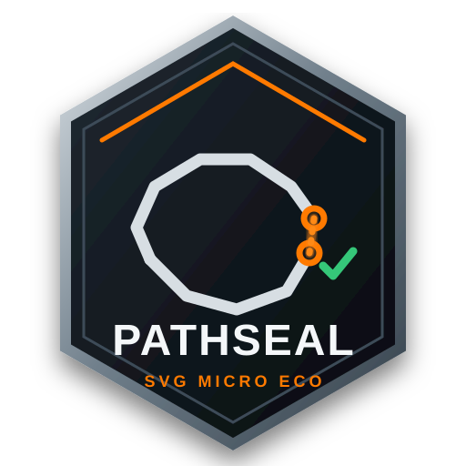

Find every break
Scan the complete SVG and identify open contours before they become failed cuts or wasted material.

SVG Micro Eco
PathSeal
Scan CNC-ready SVG files, review every open contour, and approve exactly which gaps PathSeal should close.
No SVG has been scanned yet.
Review the numbered gaps and choose exactly which paths PathSeal should close.
CNC SVG repair without the guesswork
PathSeal scans SVG files for open paths, shows each questionable gap directly on the drawing, and lets you approve exactly which contours should be repaired.
Scan and review are free. Sign in to repair and download.
Signed in as
Scan the complete SVG and identify open contours before they become failed cuts or wasted material.
See numbered gaps in the preview and approve repairs individually instead of trusting a blind cleanup process.
Export a validated SVG with the selected paths sealed and ready for the next step in your CNC workflow.
PathSeal founder access
Founder launch pricing for PathSeal, with a direct path into the growing SVG Micro Eco repair-tool ecosystem.